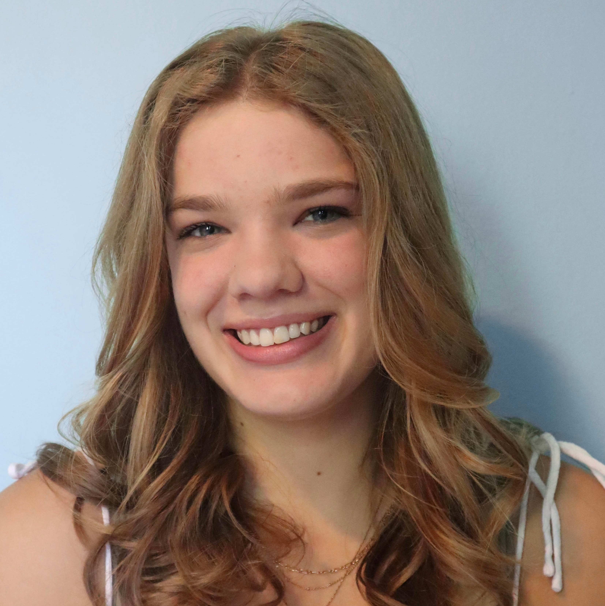
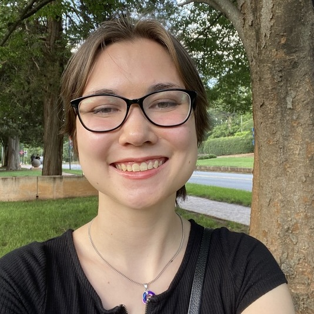
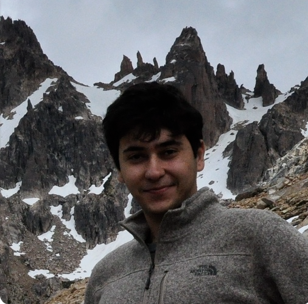
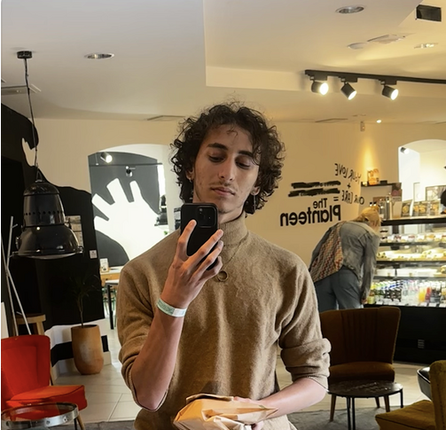
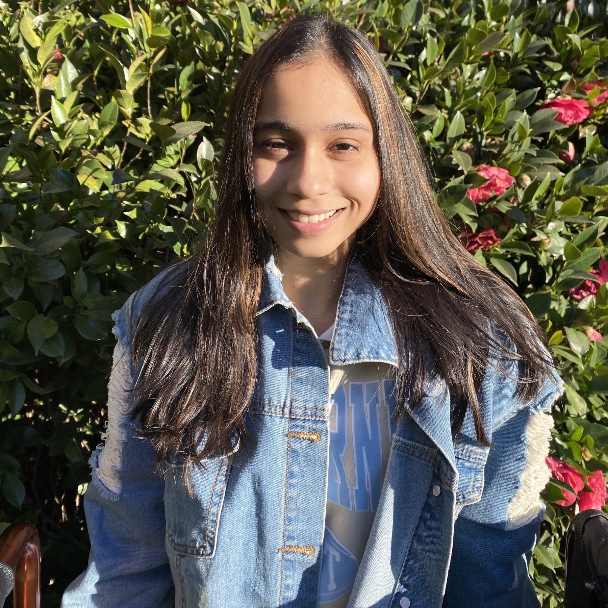
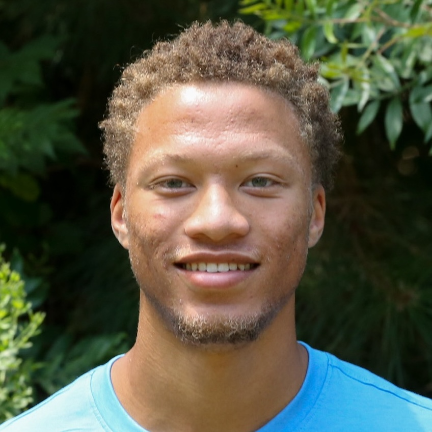
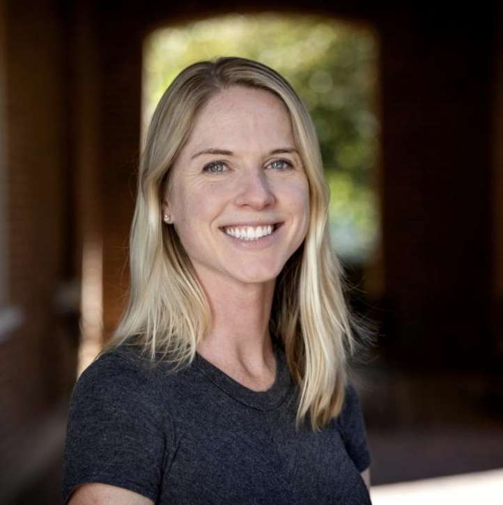

About
Community Research Fellows (CRF) Program
The Community Research Fellows program launched in 2020 as a collaboration between the Davidson College Center for Civic Engagement and the Data CATS program. Each summer over an 8-week period, a small cohort of Davidson students engages in place-based research in partnership with local community leaders, supported by faculty advisors.
The inaugural cohort in 2020 completed a needs assessment of the North Mecklenburg community through conducting a series of surveys, focus groups, and interviews. The fellows developed a North Mecklenburg Needs Assessment Summary Report, Data Dashboard, and Community Research Library Guide to index research and data on social issues in the greater Charlotte-Mecklenburg area. In 2021, fellows continued exploring the key focus areas identified in the 2020 Needs Assessment: housing, healthcare, and childcare. The team conducted research, held focus groups, and developed a survey that was administered to focus neighborhoods in North Mecklenburg. In 2022, fellows completed the 2021 report, developed a data dashboard, and finalized research documents to summarize findings from prior summers using data visualizations. In 2023, the fellows collaborated with the Center for Racial Equity in Education (CREED) on research projects related to North Carolina School Boards and created a data dashboard. In 2024, fellows collaborated with historian Hilary Green and the Davidson College Archives, utilizing AI to make historical issues of The Davidsonian student publication accessible on Open Davidson. In 2025, the most recent cohort created an updated North Mecklenburg data dashboard hosted on this website, providing a central location for both data and resources specific to the North Meck community.
Program Timeline
| 2020 | 2021 | 2022 | 2023 | 2024 | 2025 |
|---|---|---|---|---|---|
| Needs Assessment Report, Dashboard, and Library Guide | Further research into housing, healthcare, and childcare | North Meck Dashboard & Report | E(race)ing Inequities Dashboard with CREED | Open Davidson archive search | (our project overview) |
Explore Other CRF Projects
Meet the Fellows
2025

Allie Vorley (graduating 2027)
Allie is a Computer Science major from Seattle, Washington.

Calli Robles (graduating 2026)
Calli is a Sociology major and Data Science minor from Charlotte, North Carolina.
Gaby Mata (graduating 2026)
Gaby is a Psychology major and Anthropology minor from Chicago, Illinois.
Patrick Grimes (graduating 2027)
Patrick is Data Science major and German Studies minor from New York.
2024
Hannah Holmes (graduating 2026)
Hannah is an Anthropology major and Data Science minor from Beaumont, Texas.

Kerem Atas (graduating 2026)
Kerem is a Computer Science major and Data Science minor from Bursa, Turkey.
Mary Elizabeth Shoop (graduating 2026)
Mary Elizabeth is a Political Science major and Data Science minor from Asheville, NC.

Philo Gabra (graduated 2025)
Philo was a Computer Science major, Data Science minor and is currently working in data engineering.
2023
Tyler Yandt (graduated 2024)
Tyler was a Computer Science major, Data Science minor and is currently working as a Data Analyst & Research Assistant for the City of Boston Planning Department.
Owen Williamson (graduated 2024)
Owen was a Political Science major and is currently pursuing a Master of Science in Data Science and Business Analytics at UNC Charlotte.

Malavika Kalani (graduated 2024)
Malavika was a Mathematics and Computer Science major and currently works as an Analyst in Data & Automation at SP Group.
Huey Li (graduated 2024)
Huey was a Computer Science and Economics double major and is currently working in data/business analytics and software engineering.
2022
Jane Berick (graduated 2023)
Jane was a Psychology major, Communication Studies minor and currently works as an Admissions Analyst at Georgetown.
Brynn Jones (graduated 2024)
Brynn was a Data Science major, Computer Science minor and currently works as a Data Scientist & Analyst at Trane Technologies.
2021
John Curtin (graduated 2023)
John was an Economics major and currently works as a Data Scientist at New Balance.
Sohan Gade (graduated 2023)
Sohan was an Economics major, Data Science minor and currently works as a Junior Product Manager on the International Merchandising Technology Team at Walmart.
Tyler McLaren (graduated 2022)
Tyler was a Political Science major and currently works as an Implementation Manager at McMaster-Carr.

Savanna Vest (graduated 2022)
Savanna was a Digital & Computational Studies major, Gender & Sexuality Studies minor and is currently studying in Clemson’s Master of Education in Student Affairs Program while working as the Graduate Community Director.
2020

Bryce Anthony (graduated 2023)
Bryce was a Computer science major, Applied Mathematics minor and currently works in data analytics, machine learning, and generative AI.
Garnet Brown (graduated 2021)
Garnet was an Economics major, Data Science minor and currently works as a Product Manager at Red Ventures
Meet the Faculty
Dr. Stacey Riemer (2020-25 team)
Stacey Riemer is the Associate Dean of Students & Director of the Center for Civic Engagement. She provides strategic direction, supervision and management to the center for civic engagement, the college union, leadership development, and the Lula Bell Houston Resource Center. She has over 30 years of experience in higher education as a practitioner and faculty member, and currently teaches a seminar on high impact experiential learning each semester.
Dr. Laurie Heyer (2021-25 team)
Laurie Heyer is the John T. Kimbrough Professor of Mathematics and Computer Science, Associate Dean for Data and Computing, and co-director of the Community Research Fellows program at Davidson College. She has co-authored two biology textbooks and conducts collaborative research with students and colleagues in data science.
Dr. Andrew O’Geen (2021-22 & 2025 team)
Andrew O’Geen is an Associate Professor of Political Science at Davidson College, where he been teaching since 2011. His research and teaching reflect his general interests in law and politics.
Prof. Pete Benbow (2025 team)
Pete Benbow is the James B. Duke Assistant Professor of Practice in Data Science. He is a technologist specializing in data engineering and business intelligence (BI). His work focuses on integrating large volumes of structured and unstructured information from disparate sources into centralized repositories like data warehouses, then discovering the stories within the data through visualization and analysis. He applied these skills professionally for more than a decade as a developer, team leader, and consultant before he joined the Data Science faculty in 2024.

Dr. Aubrey Condor (2024 team)
Aubrey Condor is currently a data scientist and researcher specializing in the use of artificial intelligence for educational applications. She previously taught courses at Davidson college as part of an interdisciplinary data science minor.
Dr. Hilary Green (2024 team)
Hilary Green is the James B. Duke Professor of Africana Studies. Her work explores the intersections of race, class, and gender in pre-1920 African American history, Reconstruction Studies, and Civil War Memory. She is the author of Educational Reconstruction: African American Schools in the Urban South, 1865-1890 (Fordham University Press, 2016) and Unforgettable Sacrifice: How Black Communities Remembered the Civil War (Fordham University Press, 2025).
Dr. Brittany Murray (2023 team)
Brittany Murray is the Malcolm O. Partin Assistant Professor of Educational Studies and Political Science. Her research investigates relationships between families and educational policies, school resource allocation, and the distribution of learning opportunities in U.S. public schools. She teaches courses on the social foundations of K-12 education, research methods, and critical approaches to policy analysis.
Dr. Jason Byers (2022 team)
Jason Byers is currently an Assistant Professor of Political Science at University of Connecticut, and previously served as a Visiting Assistant Professor of Data Science at Davidson. His research focuses on leveraging new data and quantitative methods to better understand American political phenomenon.
Dr. Rebeca Fernandez (2021 team)
Rebeca Fernandez is an Associate Professor of Writing and Educational Studies and Director of the Writing Center. Her academic and professional interests center on the language development and academic socialization of linguistic minorities across the lifespan.
Dr. Che Smith (2020 team)
Che Smith is currently a Senior Analytics Engineer and previously served as a Visiting Assistant Professor of Data Science at Davidson. Her experience spans a variety of settings, including local and federal government public health agencies, academia, consulting, and entrepreneurship. Her research focuses on modeling data collected from individuals across time with attention to variable choice, bias reduction, and the use of data visualization to communicate complex and high-dimensional data.